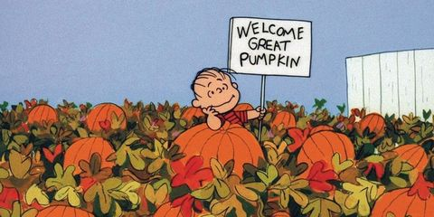
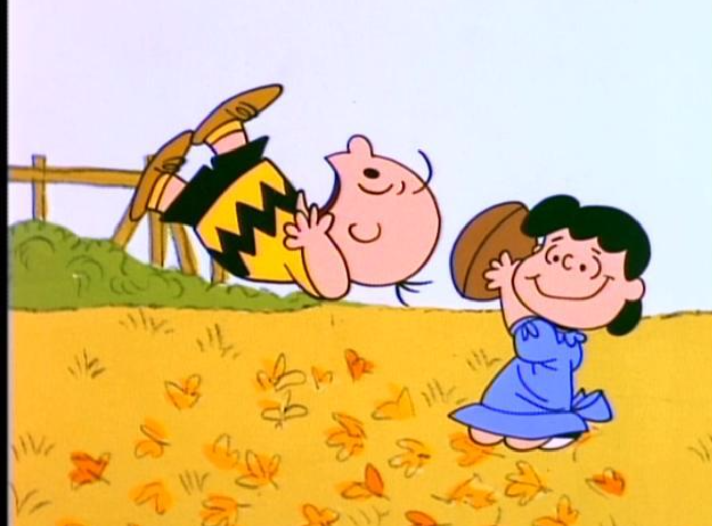

Fall is an great time of year, mostly because it is during football season. It's the time of year where Linus is waiting for the Great Pumpkin and Charlie Brown is unable to kick a football. Most people think of fall as lasting from Septemeber to the end of November. Fall actually begins on September 21 and lasts til December 21. This i]time of year the weather is cooler with the leaves turning yellow, orange or red then falling off the trees. Fall is most known for Holidays such as Halloween and Thanksgiving.
 